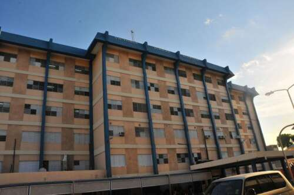
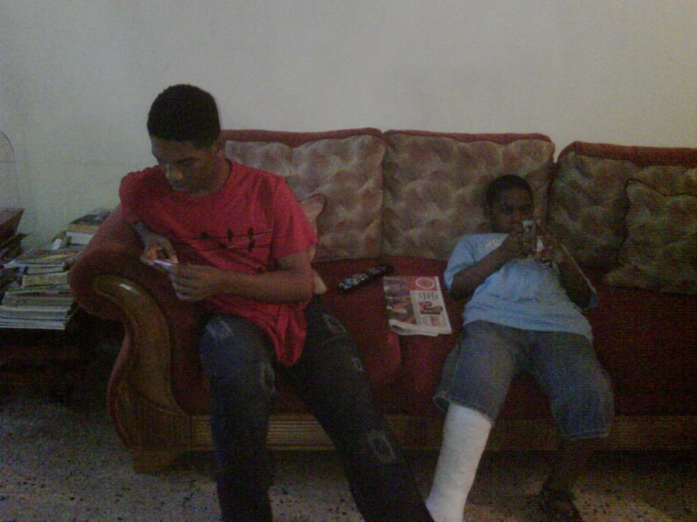

My name is Shae Palmer and this is my attempt at completing Individual Assignment 2 which is to build a Portfolio website about yourself
This is the main page where I'll give a brief background about
I was born in victoria jubilee hospitalon November 25, 2003 thanks to my lovely mother <3

I am the youngest with only 1 older brother he's kind of annoying, reckless, cool sometimes I guess and lucky.

My brother and I were born with a defect called blount's disease. Blount's disease is a disorder of the growth plates in the bones around the knee. It causes a child to have a bowlegged appearance.
Click here if you would like more information about the disease
Like I mention My brother is lucky he grow out of the disease. I'll go on depth in the Life Story Page.
Went to Mico Primary then Camperdown and currently at Utech.
Again this is just a brief break down. Use the navigation bar visit other web pages where I elaborate further.